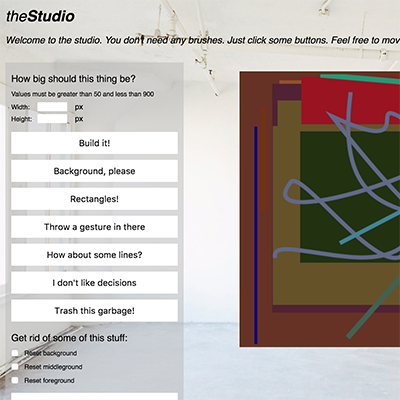
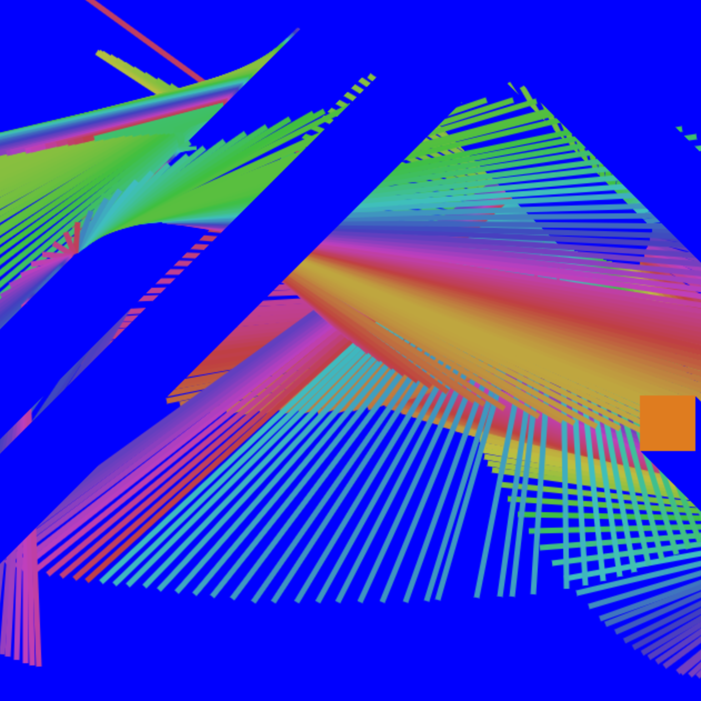
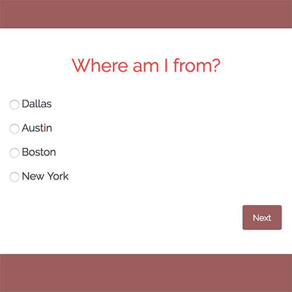
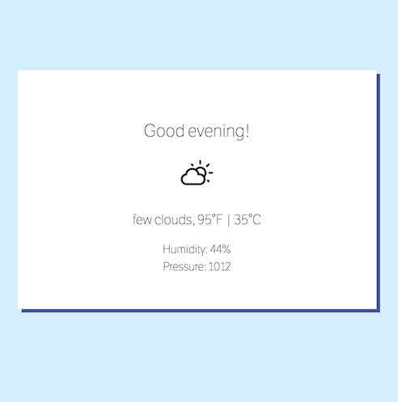

About
I am a maker. I paint, code, and make electronic music.
My background is in traditional drawing, painting, and ceramics. I have always been curious about and had a knack for technology, though: I grew up making websites about Legos and video games, and began my studies in traditional software engineering and web development while earning my Bachelor of Fine Arts at UT Austin.
In 2011, I began producing electronic music under the guise of PBS. Skeptic was released on Detroit's Crisis Urbana in 2013 and I have self-released music on bandcamp.
I have recently ventured into the world of interactive and digital art through a concentrated effort at becoming an effective programmer -- something that has been a lifelong dream, since my father gave me a book on coding in C at around age 10. I have quickly gained a comfort and love for the quirkiness of JavaScript and its expressive power.
I am a naturally curious person, and one who likes to know a topic comprehensively; this is why I've stubbornly built this website from scratch.
Skills
Projects
The Studio
Ephemeral automatic painting generator built with JavaScript.
JSART.ART
A series of Javascript based interactive digital drawings. These are one part user-interaction, one part program-intervention.
Quiz
A simple multiple-choice quiz app built with JavaScript. (jQuery, Require)
Weather App
Displays the local weather based on the user's geolocation. (React)
Current work can be found here.
a lighted lamp
A 90s-esque guestbook of yore built with Flask.
Skeptic - 2013 - Crisis Urbana
Group of Seven - 2017 - self-released
Contact
I like to socialize, digitally — for questions, comments, and other inquries, send me a message at philipharrell@gmail.com or through your favorite social account.